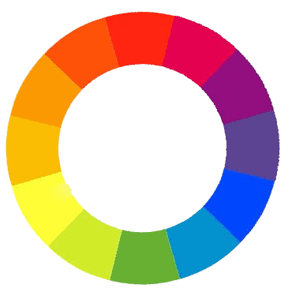

El diseño de interfaces tiene como objetivo principal crear experiencias de usuario que sean fáciles, intuitivas y agradables. Para esto, se deben tener en cuenta varios aspectos como la accesibilidad, la responsividad y la usabilidad.
La responsividad permite que un diseño web se ajuste automáticamente a diferentes tamaños de pantalla, lo que asegura que el contenido sea accesible tanto en computadoras de escritorio como en dispositivos móviles.
El grid es una estructura de líneas que une el diseño, proporcionando coherencia y facilitando la implementación.
Los colores son clave en el diseño, influyen en el estilo, el estado de ánimo y las emociones. Tonos verdes y amarillos se asocian con estados positivos, mientras que los rojos y morados son más difíciles de distinguir en ciertas condiciones.
Accesibilidad: es esencial usar colores con buen contraste para mejorar la legibilidad y adaptarse a usuarios con dificultades visuales.

La tipografía es una colección de estilos de una letra, y la fuente es cada estilo específico.
Evita fuentes decorativas o detalladas en tamaños pequeños.